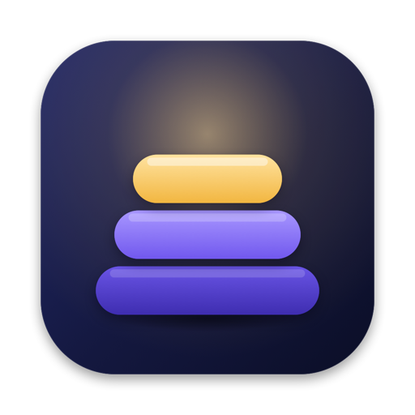

WorkBase Support
Common questions
Where is my data, and how do I back it up?
Everything is stored on your Mac. Use Settings › Backup to create a backup or an encrypted backup (a single file protected by a password), and turn on automatic daily backups if you like. Keep a copy somewhere safe, such as an external drive.
How do I move WorkBase to a new Mac?
On the old Mac, create an encrypted backup and choose to include vault secrets if you need them. Install WorkBase on the new Mac from the App Store (your purchase is free to download again with the same Apple ID), then restore the backup from Settings › Backup.
WorkBase says it couldn't verify the purchase.
WorkBase checks its App Store purchase from time to time. Without internet it keeps working fully for 7 days. Connect to the internet and click "Check Again" in the banner, and make sure you're signed in to the App Store with the Apple ID that bought it. Your data is never deleted or hidden: you can always view, back up and export it.
My widgets are empty or grey.
Open WorkBase once so it can write fresh widget data, then remove the widget and add it again. Settings › Widgets shows whether the connection is working.
How do I turn Tabaq (the desktop companion) on or off?
Settings › Companion, or View › Show/Hide Companion (⌥⌘K). There you can also set his name, his cat's name, whether he speaks out loud, how chatty he is, and when he stays quiet.
Does WorkBase work with several currencies?
Yes. Every amount keeps its own currency and different currencies are never added together. You can enter exchange rates to see approximate "≈" totals; stored amounts are never converted.
How do I use WorkBase in Arabic?
WorkBase follows your Mac's language. To use Arabic only for WorkBase: System Settings › General › Language & Region › Applications, add WorkBase and choose Arabic, then reopen the app.
WorkBase requires macOS 14 Sonoma or later.
دعم WorkBase
أسئلة شائعة
أين بياناتي، وكيف أعمل نسخة احتياطية؟
كل البيانات محفوظة على جهازك. من الإعدادات › النسخ الاحتياطي يمكنك إنشاء نسخة احتياطية أو نسخة مشفّرة (ملف واحد محمي بكلمة مرور)، وتفعيل النسخ الاحتياطي اليومي التلقائي. احتفظ بنسخة في مكان آمن مثل قرص خارجي.
كيف أنقل WorkBase إلى ماك جديد؟
على الجهاز القديم أنشئ نسخة احتياطية مشفّرة، واختر تضمين أسرار الخزنة إن احتجت إليها. ثبّت WorkBase على الجهاز الجديد من App Store (التنزيل مجاني لنفس Apple ID الذي اشتراه)، ثم استعد النسخة من الإعدادات › النسخ الاحتياطي.
يظهر أن WorkBase لم يتمكن من التحقق من الشراء.
يتحقق WorkBase من شرائه من App Store من وقت لآخر. بدون إنترنت يعمل بالكامل لمدة ٧ أيام. اتصل بالإنترنت واضغط «تحقّق مرة أخرى» في الشريط، وتأكد أنك مسجّل في App Store بنفس Apple ID الذي اشتريت به. بياناتك لا تُحذف ولا تُخفى أبدًا: يمكنك دائمًا عرضها ونسخها احتياطيًا وتصديرها.
الودجتس فارغة أو رمادية.
افتح WorkBase مرة ليكتب بيانات الودجتس، ثم احذف الودجت وأضفه من جديد. تعرض الإعدادات › الأدوات (ودجت) حالة الاتصال.
كيف أُظهر أو أُخفي «طَبَق» (رفيق سطح المكتب)؟
من الإعدادات › الرفيق، أو من قائمة عرض › إظهار/إخفاء الرفيق (⌥⌘K). ومن هناك تختار اسمه واسم قطته، وهل يتكلم بصوت مسموع، ومدى كلامه، ومتى يلتزم الهدوء.
هل يدعم WorkBase أكثر من عملة؟
نعم. كل مبلغ يحتفظ بعملته، ولا تُجمع العملات المختلفة أبدًا. يمكنك إدخال أسعار صرف لعرض إجماليات تقريبية «≈»، ولا تتغير المبالغ المحفوظة.
كيف أستخدم WorkBase بالعربية؟
يتبع WorkBase لغة جهازك. لاستخدام العربية في WorkBase فقط: إعدادات النظام › عام › اللغة والمنطقة › التطبيقات، أضف WorkBase واختر العربية، ثم أعد فتح التطبيق.
يتطلب WorkBase نظام macOS 14 Sonoma أو أحدث.